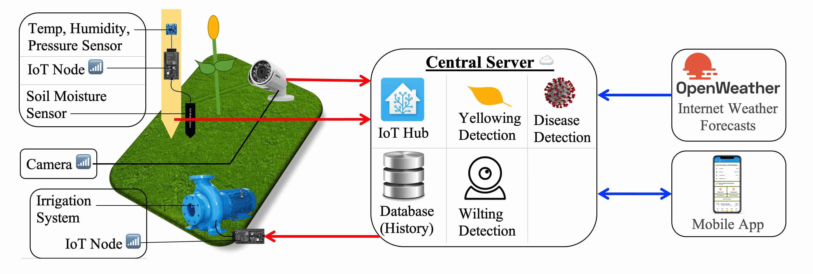

Smart Irrigation
Georgia Science Fair 2023

Abstract: Water is becoming scarcer, yet our need for food is rising. According to the UN, 60% of water used for irrigation is wasted, and the frequency of droughts is rising rapidly. This inefficiency is mainly caused by manual or schedule-based irrigation. Could this problem be solved with emerging technologies, especially internet-of-things (IoT) and artificial-intelligence (AI)?
My project has five main components. First is a sensor node, which checks temperature, humidity, and soil-moisture in the plantation and sends data back to server via Wi-Fi or cellular-data (4G/5G). There is also a camera in the field that sends pictures of the plant back to server. The irrigation system is connected to internet via another node to allow it to be controlled smartly/remotely. The central server (hosted in the cloud) detects wilting, yellowing, and diseases in the image, then decides whether to water or not based on the image & sensor data plus rain forecasts. The users will interact with the system via a mobile app to see history/ data and manually override irrigation as backup.
To test the wilting detector, I download/took pictures of plants and categorized then as healthy or wilting. I ran the detector on each of these images, and it was overall 80% accurate. I tested the disease detector and yellowing detector in a similar way. Yellowing was 77% accurate, and disease was 93% accurate.
While current irrigation is labor-intensive and overwaters crops, this is a low-cost system that can increase efficiency and reduce water wastage using emerging technologies.